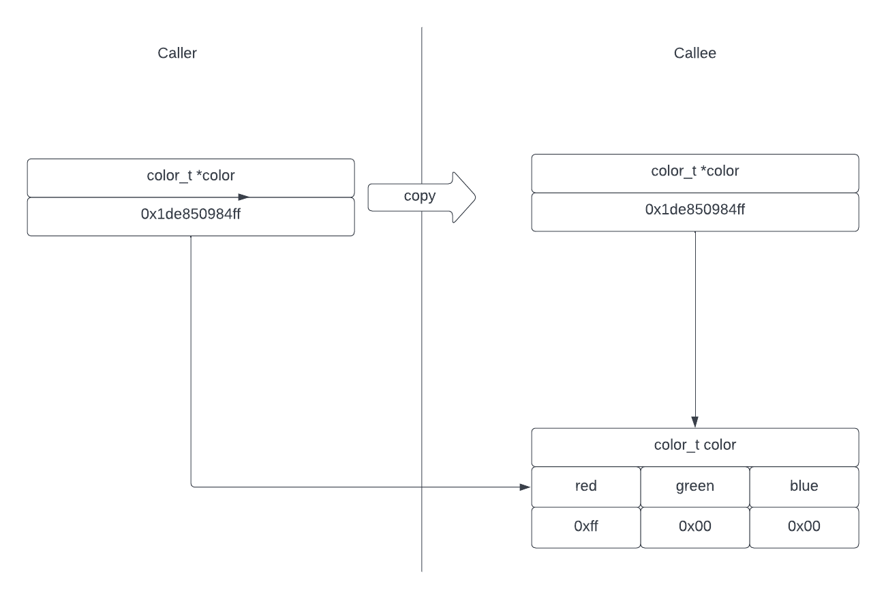

name: initial-layout layout: true <div class="nx-header-flag-1"></div> <div class="nx-header-flag-2"></div> <div class="nx-footer"> <small> <a href="https://alienfile.org/newfangled">alienfile.org/newfangled</a> </small> / <a href="https://twitter.com/plicease">@plicease</a> / <a href="https://sched.co/ylEf">The Perl Conference</a> / 22 June 2022 </div> --- name: title class: center, middle # *NewFangled* ## Bringing NewRelic to Perl with **Alien** and **FFI** Technology --- template: initial-layout layout: true <div class="nx-header-title">🌻 NewFangled</div> --- class: nx-hide-bullet ### Graham Ollis * <img src="img/fastly.svg" class="nx-icon"> Software Engineer at <span class="nx-red-link">[Fastly](https://fastly.com)</span> * <img src="img/twitter.svg" class="nx-icon"> [@plicease](https://twitter.com/plicease) * <img src="img/github.svg" class="nx-icon"> [github.com/plicease](https://github.com/plicease) * cpan: [PLICEASE](https://metacpan.org/author/PLICEASE) * <img src="img/irc.svg" class="nx-icon"> [\#native](https://kiwiirc.com/nextclient/#irc://irc.perl.org/#native?nick=mc-guest-?) on [irc.perl.org](http://irc.perl.org) ??? My name is Graham Ollis, I am a software engineer at Fastly and I am known on the internet as PLICEASE --- # Slides * <img src="img/www.svg" class="nx-icon"> <a href="https://alienfile.org/newfangled">alienfile.org/newfangled</a> --- # What is NewRelic? -- count:false * you instrament your *code* -- count: false * they provide a portal with pretty **graphs** and **alerts** -- count: false * you then tune and optimize your web application --- ## The Problem with NewRelic NewRelic provides drivers for many languages * PHP * Java * Ruby * Go -- count: false * ... but not *Perl* --- # Solution #1 ## Hey let's just write our own!? * Brock Wilcox / [AWWAIID](https://metacpan.org/author/AWWAIID) 2013 attempt -- count: false * NewRelic said sure, please do not use their <sup>TM</sup> -- count: false * Pure Perl [Devel::Vestige](https://github.com/awwaiid/devel-vestige/blob/master/lib/Devel/Vestige/Agent/Service.pm) -- count: false * No assistance otherwise --- # Solution #2 ## Hey let's use the NewRelic Agent SDK (ASDK)!? * [NewRelic::Agent](https://metacpan.org/pod/NewRelic::Agent) -- count: false * Bundle the **ASDK** -- count: false * **XS** and **C++** -- count: false * Bug: links against install time **.so** -- count: false * **ASDK** alpha and never officially supported -- count: false * **Binary blob** impossible to patch -- count: false * Only one platform: x86_64 Linux -- count: false * Links against an old version of Ubuntu **OpenSSL** --- # Solution #3 ## Hey let's use FFI for the NewRelic Agent SDK * Fixed Bug: links against runtime **.so** -- count: false * (using [Alien](https://metacpan.org/pod/Alien) instead of bundling) -- count: false * Arguably good: no **XS** or **C++** -- count: false * Bad: other problems remain --- # Solution #4 ## Hey let's write NewRelic C-SDK bindings using * C library -- count: false * **Open Source** -- count: false * Officially supported on Linux -- count: false * Portable to other platforms --- # Solution #4 ### Alien Tech * [Alien::libnewrelic](https://metacpan.org/pod/Alien::libnewrelic) -- count: false * Downloads, patches and installs the NewRelic C-SDK -- count: false * In a private share directory -- count: false ### FFI * [NewFangle](https://metacpan.org/pod/NewFangle) -- count: false * Comprehensive Perl bindings for the NewRelic C-SDK -- count: false * Leaves **NewRelic::** namespace for NewRelic --- # What is Alien? The **Alien** namespace is reserved for modules that provide external non-Perl libraries and tools as dependencies on CPAN. -- count: false * Aliens should use the system library or tool, if available -- count: false * And build the library or tool from source otherwise --- # Alien::Build architecture --- # Alienize (autoconf) ``` use alienfile; plugin PkgConfig => 'libarchive'; share { start_url 'http://libarchive.org/downloads/libarchive-3.6.1.tar.gz'; plugin Download => (); plugin Extract => 'tar.gz'; plugin 'Build::Autoconf'; plugin 'Gather::IsolateDynamic'; } ``` --- # Alienize (make) ``` use alienfile; probe sub { 'share' }; share { requires 'Alien::libpcre'; start_url "https://github.com/newrelic/c-sdk/archive/v1.3.0.tar.gz"; plugin Download => (); plugin Extract => 'tar.gz'; * build [ * 'make libnewrelic.a libnewrelic.so', * 'mkdir -p %{.install.prefix}/lib %{.install.prefix}/include %{.install.prefix}/dynamic', * 'cp -a libnewrelic.a %{.install.prefix}/lib', * 'cp -a libnewrelic.so %{.install.prefix}/dynamic', * 'cp -a include/libnewrelic.h %{.install.prefix}/include', * ]; gather sub { my $build = shift; my $prefix = $build->runtime_prop->{prefix}; $build->runtime_prop->{cflags} = "-I$prefix/include "; $build->runtime_prop->{libs} = "-L$prefix/lib -lnewrelic "; $build->runtime_prop->{version} = '1.3.0'; }; } ``` --- # Alienize (patch) ``` use alienfile; probe sub { 'share' }; share { requires 'Alien::libpcre'; start_url "https://github.com/newrelic/c-sdk/archive/v1.3.0.tar.gz"; plugin Download => (); plugin Extract => 'tar.gz'; * my @patch = ( * '%{patch} -p1 < %{.install.patch}/notice-error-with-stacktrace.diff', * '%{patch} -p1 < %{.install.patch}/hostname.diff', * '%{patch} -p1 < %{.install.patch}/clang-fallthrough.diff', * '%{patch} -p1 < %{.install.patch}/header-guard.diff', * ); * * patch \@patch; build [ 'make libnewrelic.a libnewrelic.so', 'mkdir -p %{.install.prefix}/lib %{.install.prefix}/include %{.install.prefix}/dynamic', 'cp -a libnewrelic.a %{.install.prefix}/lib', 'cp -a libnewrelic.so %{.install.prefix}/dynamic', 'cp -a include/libnewrelic.h %{.install.prefix}/include', ]; gather sub { my $build = shift; my $prefix = $build->runtime_prop->{prefix}; $build->runtime_prop->{cflags} = "-I$prefix/include "; $build->runtime_prop->{libs} = "-L$prefix/lib -lnewrelic "; $build->runtime_prop->{version} = '1.3.0'; }; } ``` --- # Alienize (macOS) ``` use alienfile; *unless($^O =~ /^(linux|darwin)$/) { * print "This Alien only works on Linux (supported by NewRelic) and macOS (not supported by NewRelic)"; * exit; *} probe sub { 'share' }; share { requires 'Alien::libpcre'; start_url "https://github.com/newrelic/c-sdk/archive/v1.3.0.tar.gz"; plugin Download => (); plugin Extract => 'tar.gz'; my @patch E= ( '%{patch} -p1 < %{.install.patch}/notice-error-with-stacktrace.diff', '%{patch} -p1 < %{.install.patch}/hostname.diff', '%{patch} -p1 < %{.install.patch}/clang-fallthrough.diff', '%{patch} -p1 < %{.install.patch}/header-guard.diff', ); * push @patch, '%{patch} -p1 < %{.install.patch}/macos.diff' if $^O eq 'darwin'; * my $so = $^O eq 'linux' ? 'so' : 'dylib'; patch \@patch; build [ * "make libnewrelic.a libnewrelic.$so", 'mkdir -p %{.install.prefix}/lib %{.install.prefix}/include %{.install.prefix}/dynamic', 'cp -a libnewrelic.a %{.install.prefix}/lib', * "cp -a libnewrelic.$so %{.install.prefix}/dynamic", 'cp -a include/libnewrelic.h %{.install.prefix}/include', ]; gather sub { my $build = shift; my $prefix = $build->runtime_prop->{prefix}; $build->runtime_prop->{cflags} = "-I$prefix/include "; $build->runtime_prop->{libs} = "-L$prefix/lib -lnewrelic "; $build->runtime_prop->{version} = '1.3.0'; }; } ``` --- # Alien::libnewrelic the module ``` package Alien::libnewrelic; use parent qw( Alien::Base ); 1; ``` --- # What is FFI? A **Foreign Function Interface** (**FFI**) is a mechanism by which code written in one programming language can call routines written in another. -- count: false * By this definition XS is also an **FFI** -- count: false * But frequently **FFI** refers to calling a compiled language like *C* From a scripting language like *Perl* without compiling intermediary code. --- # What is Platypus? * A semiaquatic egg-laying mammal which frequents lakes and streams in eastern Australia -- count: false * A perl library ([FFI::Platypus](https://metacpan.org/pod/FFI::Platypus)) for writing Perl bindings using the *FFI* technique -- count: false * I so named Platypus because they are cute and I am originally from Australia 🇦🇺 --- # XS Installer and runtime --- # FFI Installer and runtime --- # Finding libnewrelic ```ini ; dist.ini [DynamicPrereqs / Alien] *-condition = do { use FFI::CheckLib qw( find_lib ); find_lib lib => 'newrelic' } *-body = requires('Alien::libnewrelic', '0.06') ``` -- count: false ``` package NewFangle::FFI; use FFI::Platypus 1.00; use FFI::CheckLib 0.28 qw( find_lib ); use parent qw( Exporter ); our @EXPORT = qw( $ffi ); our $ffi = FFI::Platypus->new( api => 1, # use the system libnewrelic, with Alien fallback if not available * lib => [find_lib lib => 'newrelic', alien => 'Alien::libnewrelic'], ); ``` --- # Simple types * integers * strings * floating point values --- # Simple FFI types ``` package NewFangle; use NewFangle::FFI; use parent qw( Exporter ); *$ffi->attach( newrelic_init => ['string','int' ] => 'bool' ); *$ffi->attach( newrelic_version => [] => 'string' ); if($ffi->find_symbol( 'newrelic_set_hostname' )) { $ffi->attach( newrelic_set_hostname => ['string'] => 'int' ); } else { *newrelic_set_hostname = sub { 0 }; } our @EXPORT_OK = grep /^newrelic_/, keys %NewFangle::; ``` --- # Optional functions (fallback) ``` package NewFangle; use NewFangle::FFI; use parent qw( Exporter ); $ffi->attach( newrelic_init => ['string','int' ] => 'bool' ); $ffi->attach( newrelic_version => [] => 'string' ); *if($ffi->find_symbol( 'newrelic_set_hostname' )) { * $ffi->attach( newrelic_set_hostname => ['string'] => 'int' ); *} else { * *newrelic_set_hostname = sub { 0 }; *} our @EXPORT_OK = grep /^newrelic_/, keys %NewFangle::; ``` --- # Optional functions (undefined) ``` package NewFangle; use NewFangle::FFI; use parent qw( Exporter ); $ffi->attach( newrelic_init => ['string','int' ] => 'bool' ); $ffi->attach( newrelic_version => [] => 'string' ); *$ffi->ignore_not_found(1); *$ffi->attach( newrelic_set_hostname => ['string'] => 'int' ); our @EXPORT_OK = grep /^newrelic_/, keys %NewFangle::; ``` --- # Structured data * **Structured data** allows combining named data items of different types ```c typedef struct color_t { int red; int green; int blue; } color_t; ``` --- # Structured data options <table class="nx"> <tr> <th></th> <th>pass by<br>value</th> <th>pass by<br>ref</th> <th>access<br>content</th> <th>nested</th> <th>union</th> <th>array of</th> </tr> <tr> <td class="name">FFI::Platypus::Record</th> <td class="yes">YES</td> <td class="yes">YES</td> <td class="yes">YES</td> <td class="no">NO</td> <td class="no">NO</td> <td class="no">NO</td> </tr> <tr> <td class="name">FFI::C</th> <td class="no">NO</td> <td class="yes">YES</td> <td class="yes">YES</td> <td class="yes">YES</td> <td class="yes">YES</td> <td class="yes">YES</td> </tr> <tr> <td class="name">opaque</th> <td class="no">NO</td> <td class="yes">YES</td> <td class="no">NO</td> <td class="na">N/A</td> <td class="na">N/A</td> <td class="yes">YES</td> </tr> <tr> <td class="name">object</th> <td class="no">NO</td> <td class="yes">YES</td> <td class="no">NO</td> <td class="na">N/A</td> <td class="na">N/A</td> <td class="no">NO</td> </tr> <tr> <td class="name">::PtrObject</th> <td class="no">NO</td> <td class="yes">YES</td> <td class="no">NO</td> <td class="na">N/A</td> <td class="na">N/A</td> <td class="no">NO</td> </tr> </table> --- # Structured data: pass-by-value ```c typedef struct color_t { int red; int green; int blue; } color_t; void f(color_t color); ``` --- # FFI::Platypus::Record ``` package Color { use FFI::Platypus 1.00; use FFI::Platypus::Record; record_layout_1( 'int' => 'red', 'int' => 'green', 'int' => 'blue', ); } my $ffi = FFI::Platypus->new( api => 1); *$ffi->type("record(Color)" => 'color_t'); $ffi->attach( f => ['color_t'] ); my $color = Color->new( red => 0xff, green => 0x00, blue => 0x00 ); f($color); ``` --- # FFI::Platypus::Record pass-by-value --- # Structured data: pass-by-reference ```c typedef struct color_t { int red; int green; int blue; } color_t; void f(color_t *color); ``` --- # FFI::Platypus::Record ``` package Color { use FFI::Platypus 1.00; use FFI::Platypus::Record; record_layout_1( 'int' => 'red', 'int' => 'green', 'int' => 'blue', ); } my $ffi = FFI::Platypus->new( api => 1); $ffi->type("record(Color)" => 'color_t'); *$ffi->attach( f => ['color_t*'] ); my $color = Color->new( red => 0xff, green => 0x00, blue => 0x00 ); f($color); ``` --- # FFI::C ``` use FFI::C; use FFI::Platypus 1.00; my $ffi = FFI::Platypus->new( api => 1); FFI::C->ffi($ffi); package Color { FFI::C->struct([ red => 'int', green => 'int', blue => 'int', ]); } $ffi->attach( f => ['color_t*'] ); my $color = Color->new( red => 0xff, green => 0x00, blue => 0x00 ); f($color); ``` --- # Pass by reference with FFI::C --- # When to use which? * Use FFI::Platypus::Record when you need to pass-by-value -- count: false * Use FFI::C when you need unions, nested structures or arrays of unions or structures -- count: false * Use FFI::C anytime you don't need to pass-by-value --- # FFI::C with nested structure ``` package NewFangle::NewrelicLoglevel { FFI::C->enum([ 'error', 'warning', 'info', 'debug', ], { prefix => 'NEWRELIC_LOG_' }); } package NewFangle::NewrelicTransactionTracerThreshold { FFI::C->enum([ 'is_apdex_failing', 'is_over_duration', ], { prefix => 'NEWRELIC_THRESHOLD_' }); } package NewFangle::NewrelicTtRecordsql { FFI::C->enum([ 'off', 'raw', 'obfuscated', ], { prefix => 'NEWRELIC_SQL_' }); } package NewFangle::DatastoreReporting { FFI::C->struct([ enabled => 'bool', record_sql => 'newrelic_tt_recordsql_t', threshold_us => 'newrelic_time_us_t', ]); }; package NewFangle::NewrelicTransactionTracerConfig { FFI::C->struct([ enabled => 'bool', threshold => 'newrelic_transaction_tracer_threshold_t', duration_us => 'newrelic_time_us_t', stack_trace_threshold_us => 'newrelic_time_us_t', datastore_reporting => 'datastore_reporting_t', ]); } package NewFangle::NewrelicDatastoreSegmentConfig { FFI::C->struct([ instance_reporting => 'bool', database_name_reporting => 'bool', ]); } package NewFangle::NewrelicDistributedTracingConfig { FFI::C->struct([ enabled => 'bool', ]); } package NewFangle::NewrelicSpanEventConfig { FFI::C->struct([ enabled => 'bool', ]); } package NewFangle::NewrelicAppConfig { FFI::C->struct([ app_name => 'string(255)', license_key => 'string(255)', redirect_collector => 'string(100)', log_filename => 'string(512)', log_level => 'newrelic_loglevel_t', transaction_tracer => 'newrelic_transaction_tracer_config_t', datastore_tracer => 'newrelic_datastore_segment_config_t', distributed_tracing => 'newrelic_distributed_tracing_config_t', span_events => 'newrelic_span_event_config_t', ], { trim_string => 1 }); } ``` --- # Other options for structured data * [pack](https://metacpan.org/dist/perl/view/pod/perlfunc.pod#pack-TEMPLATE,LIST) / [unpack](https://metacpan.org/dist/perl/view/pod/perlfunc.pod#unpack-TEMPLATE,EXPR) * very fast! * very esoteric * [Convert::Binary::C](https://metacpan.org/pod/Convert::Binary::C) * Pass in some C header code * Convert Perl to C structured data --- # Object: opaque pointer  ```c typedef struct color_t color_t; void f(color_t *color); ``` --- # Opaque pointer ```c /* libnewrelic.h */ newrelic_app_t* newrelic_create_app(const newrelic_app_config_t* config, unsigned short timeout_ms); newrelic_txn_t* newrelic_start_web_transaction(newrelic_app_t* app, const char* name); bool newrelic_end_transaction(newrelic_txn_t** transaction_ptr); bool newrelic_destroy_app(newrelic_app_t** app); ``` -- count: false ```c #include <libnewrelic.h> int main() { newrelic_app_config_t config; newrelic_app_t *app = newrelic_create_app(&config, 0); newrelic_txn_t *txn = newrelic_start_web_transaction(app, "transaction1"); /* ... */ newrelic_end_transaction(&txn); newrelic_destroy_app(&app); } ``` --- ## Raw opaque * opaque is just a pointer stored in scalar integer value (IV) -- count: false ``` $ffi->mangler(sub { "newrelic_$_[0]" }); $ffi->attach( create_app => [ 'opaque', 'unsigned short' ] => 'opaque' ); $ffi->attach( start_web_transaction => [ 'opaque', 'string' ] => 'opaque' ); $ffi->attach( end_transaction => ['opaque*'] => 'bool' ); $ffi->attach( destroy_app => [ 'opaque*' ] => 'bool' ); ``` -- count: false ``` my $app = create_app($config, 0); my $txn = start_web_transaction($app, "transaction1"); ... end_transaction(\$txn); destroy_app(\$app); ``` --- # Call with raw opaque <img src="diag/ffi-call-opaque.png" width="600"> --- # Object type * The FFI::Platypus **object type** is a blessed reference (RV) to a pointer stored as a integer value (IV) -- count: false * Easy to write bindings for OO-code -- count: false * Safety with type checking --- # Define an object type ``` package NewFangle::App; use NewFangle::FFI; $ffi->mangler(sub { "newrelic_$_[0]" }); *$ffi->type('object(NewFangle::App)' => 'newrelic_app_t'); *$ffi->type('object(NewFangle::Transaction)' => 'newrelic_txn_t'); $ffi->attach( [ create_app => 'new' ] => ['newrelic_app_config_t', 'unsigned short'] => 'newrelic_app_t' ); $ffi->attach( start_web_transaction => ['newrelic_app_t', 'string'] => 'newrelic_txn_t' $ffi->attach( [ destroy_app => 'DESTROY' ] => ['opaque*'] => 'bool' => sub { my($xsub, $self) = @_; my $ptr = $$self; $xsub->(\$ptr); }); ``` --- # Create methods ``` package NewFangle::App; use NewFangle::FFI; $ffi->mangler(sub { "newrelic_$_[0]" }); $ffi->type('object(NewFangle::App)' => 'newrelic_app_t'); $ffi->type('object(NewFangle::Transaction)' => 'newrelic_txn_t'); *$ffi->attach( [ create_app => 'new' ] => ['newrelic_app_config_t', * 'unsigned short'] => 'newrelic_app_t' ); *$ffi->attach( start_web_transaction => ['newrelic_app_t', * 'string'] => 'newrelic_txn_t' $ffi->attach( [ destroy_app => 'DESTROY' ] => ['opaque*'] => 'bool' => sub { my($xsub, $self) = @_; my $ptr = $$self; $xsub->(\$ptr); }); ``` --- # Delete object ``` package NewFangle::App; use NewFangle::FFI; $ffi->mangler(sub { "newrelic_$_[0]" }); $ffi->type('object(NewFangle::App)' => 'newrelic_app_t'); $ffi->type('object(NewFangle::Transaction)' => 'newrelic_txn_t'); $ffi->attach( [ create_app => 'new' ] => ['newrelic_app_config_t', 'unsigned short'] => 'newrelic_app_t' ); $ffi->attach( start_web_transaction => ['newrelic_app_t', 'string'] => 'newrelic_txn_t' *$ffi->attach( [ destroy_app => 'DESTROY' ] => ['opaque*'] => 'bool' => sub { * my($xsub, $self) = @_; * my $ptr = $$self; * $xsub->(\$ptr); *}); ``` --- # Using the object type ``` use NewFangle::App; my $app = NewFangle::App->new($config, 0); my $txn = $app->start_web_transaction("transaction1"); ... $txn->end_transaction; ``` --- # Call with object type --- # ::PtrObject * [FFI::Platypus::Type::PtrObject](https://metacpan.org/pod/FFI::Platypus::Type::PtrObject) is a blessed hash reference that includes an opaque pointer value as `ptr` -- count: false * This allows attaching additional Perl data to an opaque object --- # Defining ::PtrObject custom type * We do this for [NewFangle::Segment](https://metacpan.org/pod/NewFangle::Segment) because the Perl code needs to know the transaction the segment belongs to ``` # ::PtrObject is short for FFI::Platypus::Type::PtrObject $ffi->load_custom_type('::PtrObject','newrelic_segment_t','NewFangle::Segment', sub { bless { ptr => $_[0] }, 'NewFangle::Segment' }); ``` --- # Methods to create the ::PtrObject ``` package NewFangle::Transaction; use NewFangle::FFI; sub _segment { my $xsub = shift; my $txn = shift; my $seg = $xsub->($txn, @_); $seg->{txn} = $txn; $seg; } $ffi->attach( start_segment => ['newrelic_txn_t','string','string'] => 'newrelic_segment_t' => \&_segment ); $ffi->attach( start_datastore_segment => ['newrelic_txn_t','string[7]'] => 'newrelic_segment_t' => \&_segment ); $ffi->attach( start_external_segment => ['newrelic_txn_t','string[3]'] => 'newrelic_segment_t' => \&_segment ); ``` --- # Adding methods to the ::PtrObject ``` package NewFangle::Segment; use NewFangle::FFI; sub transaction { shift->{txn} } $ffi->attach( [ set_segment_parent => 'set_parent' ] => [ 'newrelic_segment_t', 'newrelic_segment_t' ] => 'bool' ); $ffi->attach( [ set_segment_parent_root => 'set_parent_root' ] => [ 'newrelic_segment_t' ] => 'bool' ); $ffi->attach( [ set_segment_timing => 'set_timing' ] => [ 'newrelic_segment_t', 'newrelic_time_us_t', 'newrelic_time_us_t'] => 'bool' ); ``` --- # Adding destructor to the ::PtrObject ``` package NewFangle::Segment; use NewFangle::FFI; ... $ffi->attach( [ end_segment => 'end' ] => ['newrelic_txn_t', 'opaque*'] => 'bool' => sub { my($xsub, $self) = @_; my $txn = $self->{txn}; $xsub->($self->{txn}, \$self->{ptr}); }); sub DESTROY { my($self) = @_; $self->end if defined $self->{ptr}; } ``` --- # Call with PtrObject custom type --- # NewFangle works! * Used in production -- count: false * Shaved about 15s off our global deployment time -- count: false * Everything is Awesome! --- # Solution #5 ## Hey let's use OpenTelemetry * NewRelic is discontinuing support for C-SDK -- count: false * NewRelic suggests using OpenTelemetry instead -- count: false * Improved the state of FFI and Perl --- name: questions class: nx-hide-bullet # Questions * <img src="img/www.svg" class="nx-icon"> <a href="https://alienfile.org/newfangled">alienfile.org/newfangled</a> * <img src="img/irc.svg" class="nx-icon"> [\#native](https://kiwiirc.com/nextclient/#irc://irc.perl.org/#native?nick=mc-guest-?) on [irc.perl.org](http://irc.perl.org) * <img src="img/github.svg" class="nx-icon"> [github.com/PerlAlien](https://github.com/PerlAlien) * <img src="img/github.svg" class="nx-icon"> [github.com/PerlFFI](https://github.com/PerlFFI) * <img src="img/twitter.svg" class="nx-icon"> [@plicease](https://twitter.com/plicease)